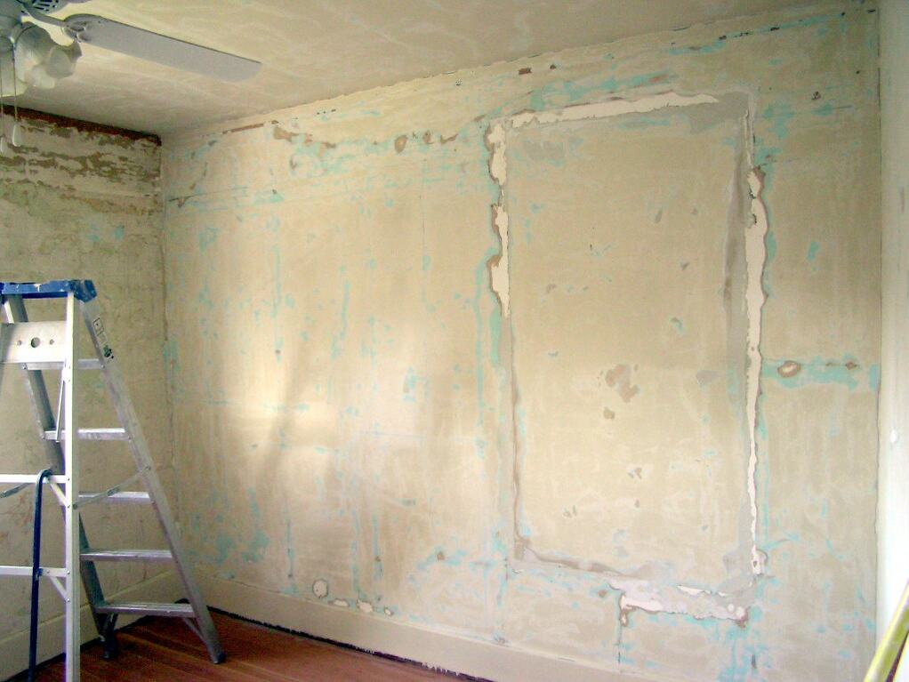
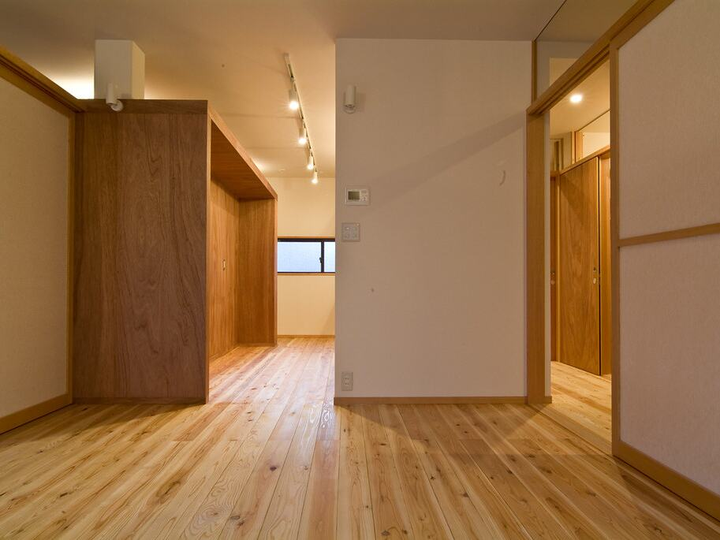
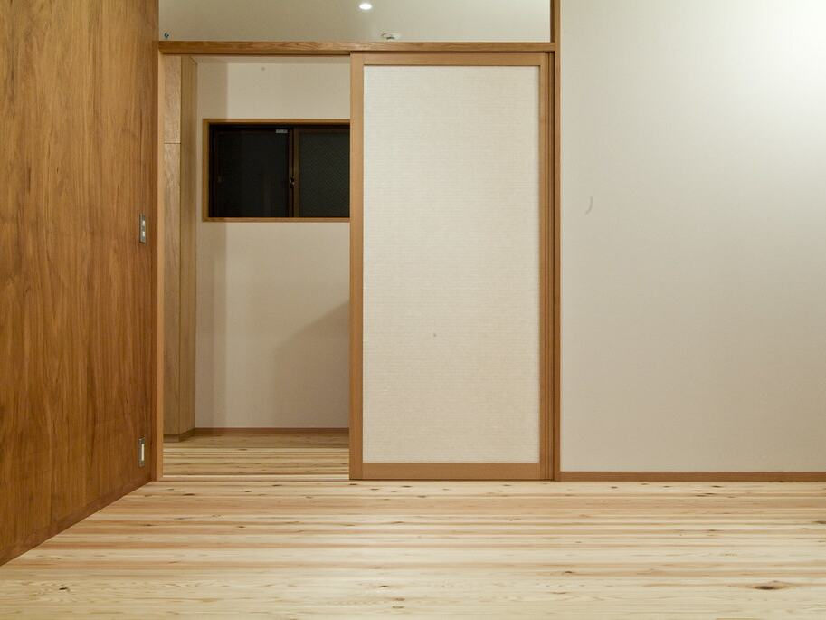
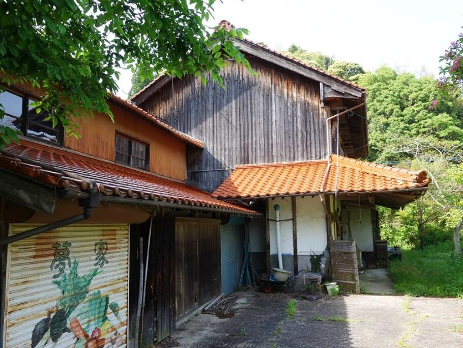
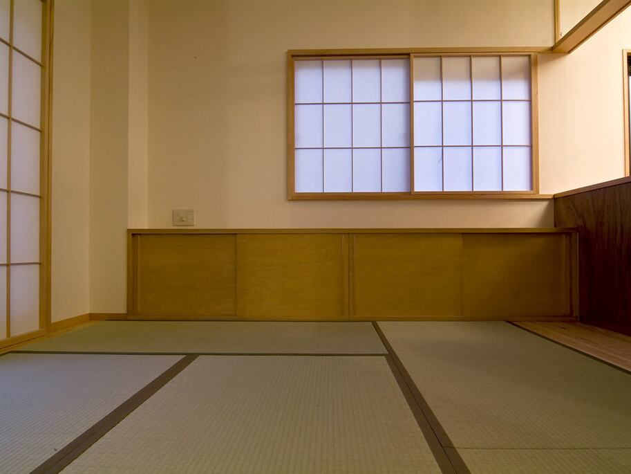

ご相談例 01
内覧を控えた空室。壁や建具の傷みが目立つ
- 補修範囲のご確認（御社）
- 小修繕
- 空室清掃
- 内覧へ

不動産会社向け｜売却前の現地対応・物件整備窓口
現地確認・必要作業の整理・協力事業者の手配・完了報告まで、
当デスクが窓口となって進めます。ご担当者様が何度も現地へ行かなくても、案件を前に進められます。
物件の所在地・写真・希望時期だけで、相談を始められます。
売買仲介を中心に、相続物件や空き家を扱い、自社に現場の対応班を持たない不動産会社様を想定しています。
売主様が遠方で、片付けから清掃までの手配を組む人がいない。
清掃・草刈り・小修繕が重なり、業者ごとに連絡する時間がない。
営業や契約業務が重なり、空室の確認や業者の立会いに出られない。
建具1か所の調整など、リフォーム会社へ頼むほどではない作業がある。
案件ごとに、工種・地域・必要な許可や資格に合う協力事業者を手配し、受付・調整・完了確認の窓口を当デスクが担当します。御社のご担当者は、見積の確認と承認に集中できます。
写真とご依頼内容をもとに、現地確認の要否と日程を調整し、物件の状況を整理します。
当デスク清掃・残置物・草刈り・補修など、必要な作業と順番を整理します。
当デスク作業ごとの内訳が分かる見積をご案内します。御社でご確認・ご承認ください。
当デスク御社がご承認ご承認後、作業内容と地域、必要な許可・資格に合う協力事業者を手配します。
当デスク複数の作業の順番と日程をまとめて調整し、進み具合をお知らせします。
当デスク作業は協力事業者作業内容が見積どおりに終わっているかを確認します。
当デスク作業前後の写真と完了報告をお送りします。売主様・上司へのご説明にお使いください。
当デスク電気工事・給水装置工事など許可・資格が必要な作業は、必要な許可・資格を有する事業者を手配できる場合に限りお引き受けします。
物件の所在地・写真・希望時期だけで、相談を始められます。
「見積がいつ出るのか分からない」「今どこまで進んでいるのか分からない」ことがないよう、段階と次の予定をお知らせしながら進めます。
ご相談を受け付けてから写真報告まで、次の12段階で進めます。各段階で、次に何が起きるかをお知らせします。
PHASE 1受付・確認
PHASE 2現地調査・見積
PHASE 3発注・作業
PHASE 4完了
所要日数は、案件の内容と協力事業者の状況によって異なります。そのため一律の日数はお約束せず、段階ごとに予定をご案内します。正式な見積は、必要な現地確認と協力事業者の判断を経てから提出します。
売主様・上司・オーナー様へのご説明にそのまま使える形で、メールなどご指定の方法でお送りします。以下は書式のサンプルで、実際の案件ではありません。
書類の形式は、ご依頼前のご相談でも確認いただけます。

普段の工事や修繕は、これまで通りいつもの施工会社・清掃会社へ。売却前の現地対応のうち、いつもの業者へ頼みにくい案件や、手が回らない時期の案件だけをお任せください。
当デスクは、売却前の「第二の手配先」です。御社の取引先に営業したり、取引の切り替えをご提案したりすることはありません。
これまで通り、
いつもの業者へ
役割分担のイメージ図です。既存業者の置き換えではありません。
上記以外でも、内容や時期によって対応できる事業者を手配できない場合があります。その場合は、その旨をご連絡します。
いつもの業者はそのままで。まず1物件、見積をご相談ください。
実際の作業事例ではなく、ご相談の進め方の例です（写真はすべてイメージです）。作業内容と順番は、物件の状況を確認してご案内します。

ご相談例 01

ご相談例 02
法人間のお取引として、着手前に条件を書面でご確認いただきます。
| ご相談・見積 | 1案件からご相談いただけます。見積の内容をご確認いただき、ご承認後に手配します。 |
|---|---|
| 見積書に記載する事項 | 作業ごとの内訳、見積の発行者、契約先、請求先、作業の責任範囲、支払条件 |
| 作業の担当 | 案件ごとに、工種・地域・必要な許可や資格に合う協力事業者が担当します。窓口・調整・完了確認は当デスクが担当します。 |
| 許可・資格の確認 | 廃棄物の収集・運搬、電気工事、給水装置工事など許可・資格が必要な作業は、手配の前に、担当する事業者が該当する許可・資格を持っていることを確認します。 |
| 作業中の破損などのご連絡 | 当デスクが窓口となり、協力事業者との対応を調整します。責任の所在と保険の範囲は、見積時に書面でお示しします。 |
| 写真・物件情報の共有範囲 | 案件の検討と作業に必要な範囲で、担当する協力事業者とだけ共有します（個人情報の取扱い）。 |
| 空室の現地確認 | 立会いの要否は物件ごとに確認し、見積の前にお知らせします。鍵の受け渡し方法や入室のご承認方法も、あわせてご相談のうえ決めます。 |
| 既存のお取引先 | 変更していただく必要はありません。お取引先への営業も行いません。 |
運営者名・所在地・電話番号・メールアドレス・受付時間・適格請求書発行事業者の登録番号・加入保険は、正式公開時にこの欄に掲載します。現在は営業提案用のデモサイトです。
| 主な対応エリア | 松山市・松前町・伊予市・東温市・砥部町上記エリアの物件を中心に、ご相談を受け付けています。 |
|---|---|
| 上記以外 | 個別にご相談ください案件内容と対応できる事業者の状況により、お引き受けできない場合があります。 |
はい。業者変更をお願いするサービスではありません。普段の業者で対応できない案件や、小規模・急ぎの案件だけでもご利用いただけます。
できます。物件の所在地・写真・希望時期が分かれば、相談を始められます。見積の内容をご確認いただいてから、ご依頼をご判断ください。
案件ごとに、工種・地域・必要な許可や資格に合う協力事業者が作業を行います。当デスクは自社で作業を行うのではなく、現地確認の調整、作業の整理、見積、手配、日程の調整、完了確認と写真報告の窓口を担当します。
写真と内容を確認し、対応可否と見積までの進め方を先にご案内します。正式な見積は、必要な現地確認と協力事業者の判断を経てから提出します。見積までに時間が必要な案件は、先に提出予定をお知らせします。
受付から写真報告までの段階ごとに、次に何が起きるかと予定をお知らせします。予定の変更や確認が必要なことが起きた場合も、当デスクからご連絡します。
できます。見積の内容をご確認いただき、ご依頼しない場合はその旨をお知らせください。
ご相談は無料です。現地調査に費用がかかる場合は、調査の前に内容と金額をご説明し、ご了承をいただいてから伺います。
見積をご案内する際に、見積の発行者・契約先・請求先と、作業の責任範囲を書面でお示しします。内容をご確認いただいたうえで、ご依頼をご判断ください。
必要かどうかは物件ごとに確認し、見積の前にお知らせします。鍵の受け渡し方法や入室のご承認方法も、あわせてご相談のうえ決めます。
収集・運搬・処分など法令上の許可が必要な業務は、必要な許可を有する事業者が担当します。当デスクは内容を確認し、その事業者への手配と日程の調整を行います。
電気工事・給水装置工事など許可・資格が必要な作業は、必要な許可・資格を有する事業者を手配できる場合に限り対応します。
内容を確認したうえで、作業の前に見積をご案内します。見積の内容をご確認いただいてから手配します。

作業内容が決まっていなくても構いません。現地の状況を整理し、必要な作業と見積をご案内します。見積をご確認いただいてから、ご依頼をご判断ください。
不動産会社様向けの窓口です
物件の所在地・写真・希望時期が分かれば、相談を始められます。作業内容が決まっていなくても構いません。
不動産会社様向けの窓口です。1案件から、いつもの業者との併用を前提にご相談いただけます。
前回の入力内容を復元しました。
ご相談を受け付けました
写真と内容を確認し、担当者から対応方法をご連絡します。
受付番号